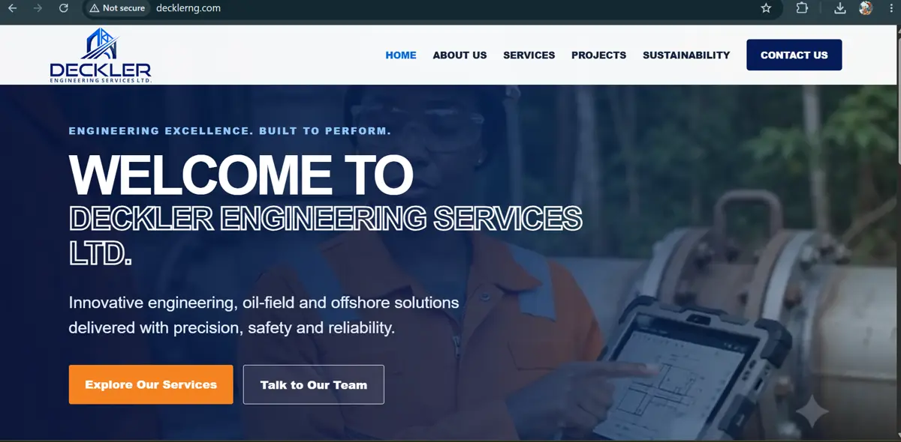

01 · Production website
Deckler
Engineering

The challenge
Turn engineering depth into digital confidence.
Deckler needed more than a list of services. The website had to communicate operational credibility, make complex capability readable, and create direct paths to enquiry.
The result uses strong hierarchy, focused service storytelling and a practical content structure that the business can maintain.
08Service areas structured
01Custom content system
100%Responsive interface

See it in production
Visit Deckler ↗Next: Anime Social →